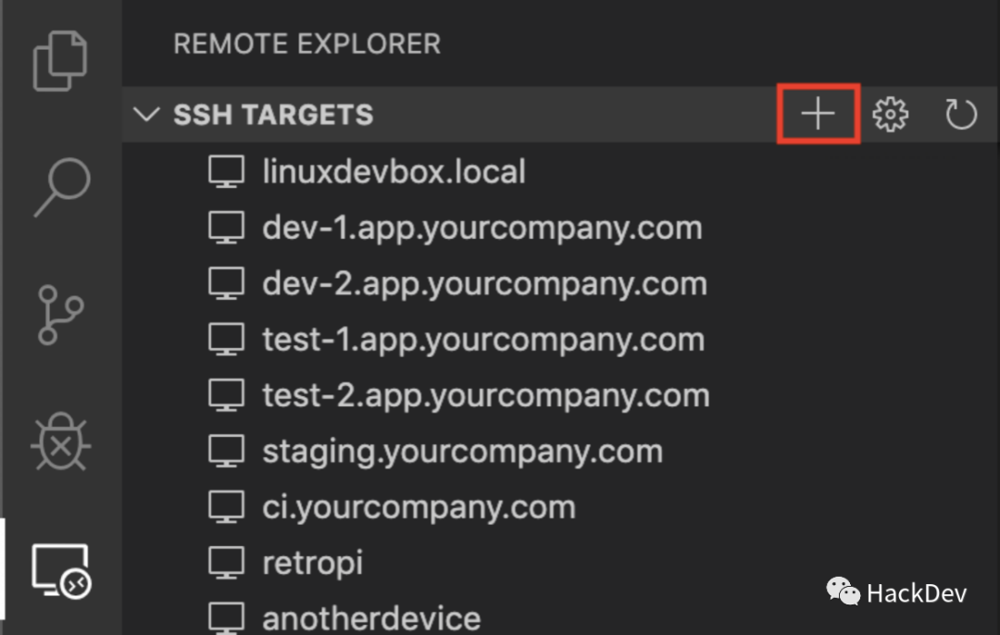

Background
I heard that vscode remote SSH is now fully available. There has been an idea to configure the laboratory machine for remote programming, but teamviewer is a real card, and other methods are not as good as I want. But the sad thing is that the network architecture of the laboratory is NAT, and I don’t know how many levels of routing have been allocated to my machine. Naturally, my machine does not have a public IP, but I remember that my student discount is 10 yuan. The Alibaba Cloud host is still there every month, and there is a public IP, so let’s start the intranet penetration.
Update: Personally I feel a little tasteless, because I mainly use python to do more scientific calculations, it is better to use jupyter notebook. . . .
Materials
- One laboratory machine, system: ubuntu 18.04 desktop 2. One cloud server, system: ubuntu 16.04 server 3. One mac.
Intranet penetration
The principle of intranet penetration is not introduced. I use github’s open source project frp . First download frp on two Ubuntu machines respectively
$ wget https://github.com/fatedier/frp/releases/download/v0.29.0/frp_0.29.0_freebsd_amd64.tar.gzAfter downloading the compressed package, unzip it, the name is too long, by the way, rename it
$ tar -zxvf frp_0.29.0_freebsd_amd64.tar.gz
$ mv frp_0.29.0_freebsd_amd64 frpThen modify the server’s configuration file
$ cd frp
$ vi frps.iniThe content is saved as follows:
# frps.ini
[common]
bind_port = 7000Then run the frp server in the background
$ nohup ./frps -c ./frps.ini &Then modify the configuration of the client (ie the laboratory machine), first enter the location where our client frp is decompressed
$ cd frpChange setting
$ vi frpc.ini isThe content is saved as follows
# frpc.ini
[common]
server_addr = x.x.x.x
server_port = 7000
[ssh]
type = tcp
local_ip = 127.0.0.1
local_port = 22
remote_port = 6000After the above configuration is completed, we need to configure Alibaba Cloud server security group rules to expose ports 7000 and 6000. See how this part of the operation Ali cloud Related Documents Note that the agreement to set up custom tcp, authorization object can be set to 0.0.0.0/0 server After the port is exposed, you can start the client’s intranet penetration program
$ nohup ./frpc -c ./frpc.ini &After this operation, you can ssh to the laboratory machine on the mac with the following command
$ ssh -oPort=6000 username@server's ipConfigure ssh password-free login
After the above steps are completed, you can ssh to connect to the laboratory machine, but vscode remote ssh requires a public key to log in without password. First generate my public key on mac
$ ssh-keygenYou need to enter some information. If you want to save trouble, just enter the box except the mailbox.
$ vi ~/.ssh/id_rsa.pubCopy everything inside, this is mac’s public key. Next, I need to find a way to copy the public key to the laboratory machine. I first placed it on the server, connected it to the server with the laboratory machine and then copied it, because the server also added a secret login to my mac. (however, the security issue of using this public key is your own consideration, I think it is not a big problem)
Next on the laboratory machine
$ vi /etc/ssh/sshd_configMake sure to have the following lines
RSAAuthentication yes
PubkeyAuthentication yes
AuthorizedKeysFile .ssh/authorized_keysIf it is no, change to yes, if not, add
$ vi .ssh/authorized_keysAdd the public key lab machine just copied from the mac and restart ssh
$ service sshd restartThe following commandssh to the laboratory machine on mac without filling in the password
$ ssh -oPort=6000 username@server's ipvscode remote ssh configuration
After making sure that the mac can log in to the laboratory machine secretly, the next step is very simple, just refer to these two articles Official Document 知知上Of
First go to the vscode plugin market to install the plugin:
After installing the plugin, click Add Host

Enter host ssh address
Waiting for the connection to complete, we can access the host at home to realize remote development.
Experience
Personally, I feel that the design is very good. If it is only used in a local area network, it should be quite easy to use. However, the use of forced intranet penetration to achieve remote development. First, the bandwidth of the relay server limits the speed of SSH. The second is that I think we have a good rest when we rest, always thinking that remote development is really unnecessary.